Usually, for each activated service within a diagnostic instance a DIAG-SERVICE is exported to ODX. Starting with CANdelaStudio 5.0 it is possible to export only one DIAG-SERVCIE per service in a diagnostic class. The telegram table of each diagnostic instance is then represented by a TABLE-ROW. The user can configure whether to export DiagnosticClasses using TABLEs by the CANdela DiagnosticClass-Attribute 'ExportAsTable'.
In CANdela 6.0 this attribute is located at the DiagClassTemplate and can therefore be edited only in Expert-Mode.
| Export single DIAG-SERVICEs | Export as TABLE |
|---|---|
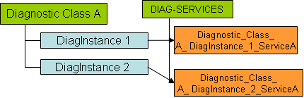 |
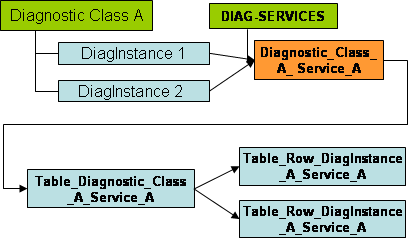 |
Remarks on diagnostic classes exported as TABLE:
With CANdelaStudio 6.5 it is possible to export a diagnostic class with the following options:
Therefore an attribute at the diagnostic class template is defined where it is possible to define which type of mapping is used to generate ODX data.
If a diagnostic class is exported as table it is possible to define the SHORT-NAME, LONG-NAME and the SEMANTIC that is used to generate the TABLE.
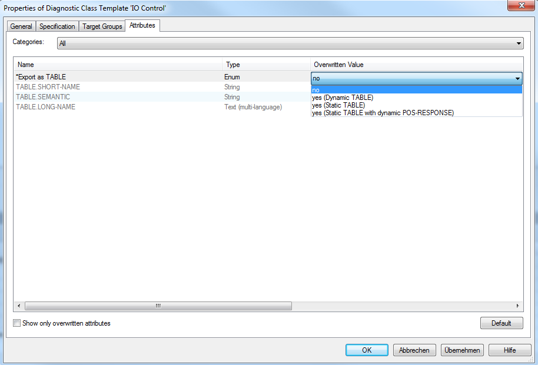
ExportAsTable attribute for diagnostic class template
If the "Export as Table" attribute is set to "no" the diagnostic instances will be exported as DIAG-SERVICE.
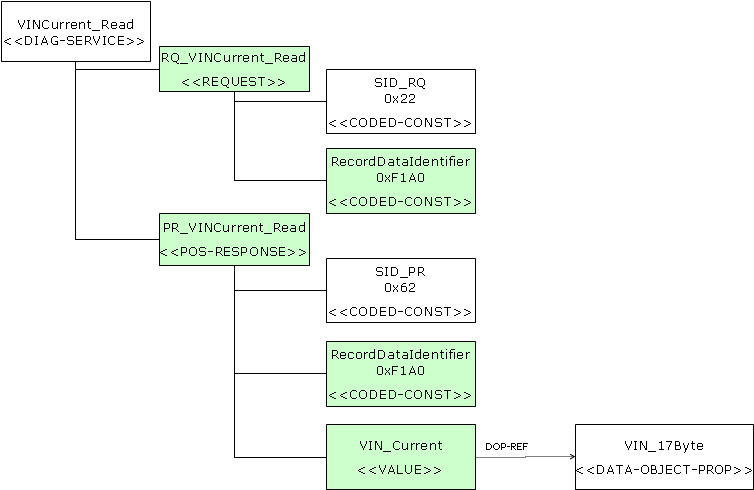
Diagnostic instance exported as DIAG-SERVICE
If the option "yes (dynamic TABLE)" is used, a TABLE will be exported that is referenced by TABLE-REFs from REQUEST and RESPONSE.
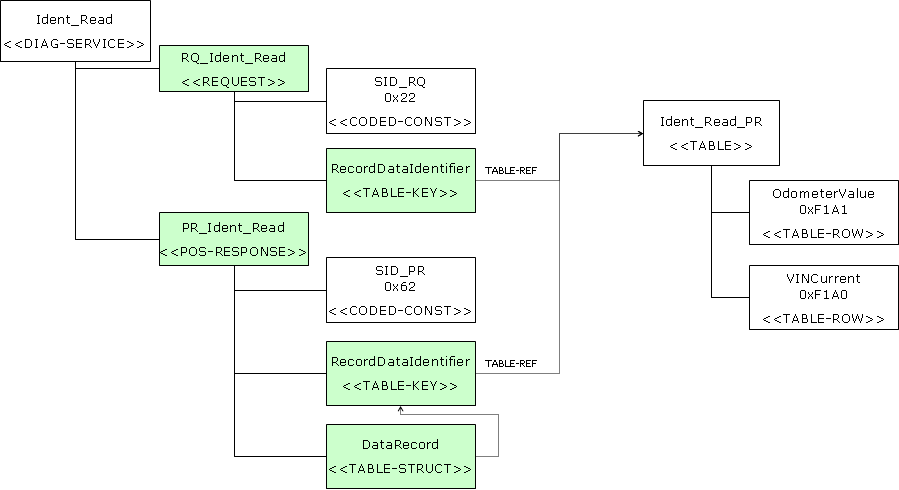
diagnostic instance exported as dynamic TABLE
With the option "yes (static TABLE)" diagnostic instances will be exported as static TABLEs. The REQUEST and RESPONSE will reference a TABLE-ROW from exported static TABLE.
diagnostic instance exported as static TABLE
If option "yes (static TABLE with dynamic POS-RESPPONSE)" is set the REQUEST will reference a TABLE-ROW but the POS-RESPONSE will reference the TABLE.
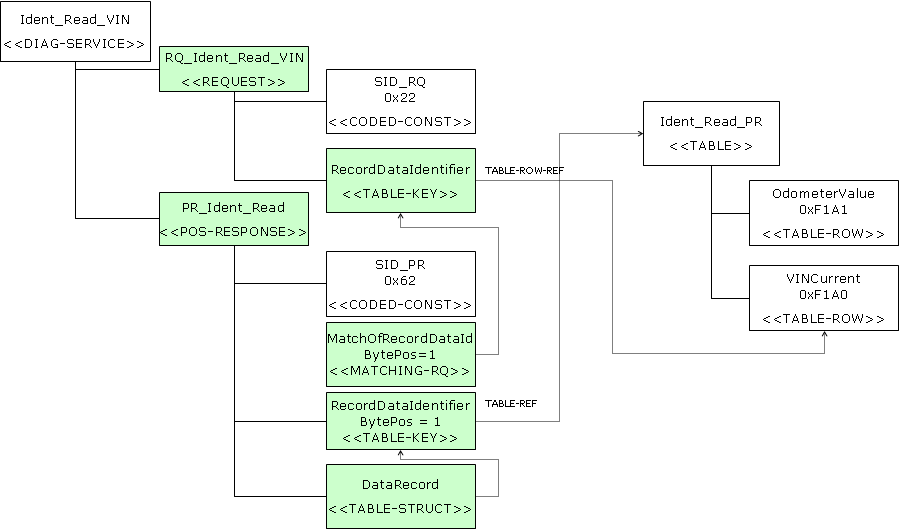
diagnostic instance exported as static TABLE with dynamic POS-RESPONSE
[ODXE-R1070-SNRefs]
In case the ODX-Export-Option "UseSnrefs" is activated, the Services using TABLEs are exported only at BV / FG-LAYER. Their PARAMs do not reference the TABLEs via ODXLINK but use SNREFs instead. Thereby on the lower ECU-VARIANT levels only the TABLEs are redefined but not the DIAG-SERVICEs.
This chapter describes the preconditions that have to be fullfilled in order to export a diagnostic class as TABLE. In addition the genenral mapping mechanism is explained, including the generation of SHORT-NAME and LONG-NAME for the resulting elements.
The following preconditions have to be fullfilled so that a diagnostic class can be exported as TABLE:
"Export-As-Table"-Attribute at the diagnostic class is set to 'yes'
Each ProtocolService has at least one ProxyComp
No CANdela-ProxyComp of an activated Service is empty
Each Primitive in each Service has a StaticComp
Each Primitive does not contain GroupOfDtc, StatusOfDTC or Muxs
The Primitive may contain an EndOfIterComp (but it has to be the only active service in the DiagnosticClass) (new in 5.5)
Each Primitive has not more than one Proxy with destiny non-any or has more that one ContentComp
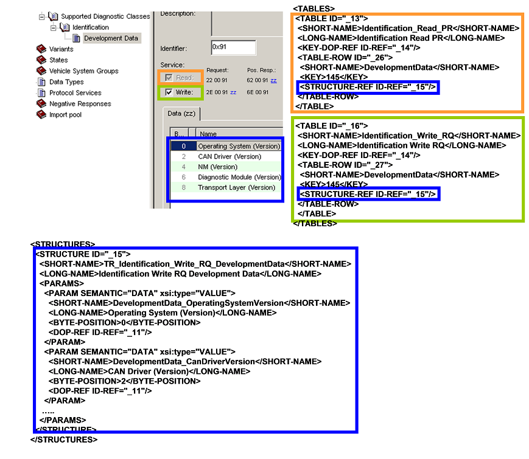
Mapping of DiagInstances to TABLEs
Above figure shows the mapping of the telegram table onto ODX-TABLEs and STRUCTUREs.
A TABLE is created for each primitive in the Services defined for the DiagnosticClass (DiagClassServiceTemplate). For each activated Service in each diagnostic instance, a TABLE-ROW is created within the TABLE created for the service (DiagClassServiceTemplate). For each ProxyComp in each diagnostic instance, a STRUCTURE is created. The content of the ProxyComp is then mapped to the STRUCTURE. When this ProxyComp is shared across multiple Services, the STRUCTURE is only generated once and referenced by the remaining TABLE-ROWs.
In the following chapter, the regular generation of SHORT-NAME and LONG-NAME is explained. The generation of the LONG-NAME is analogue to the generation of the SHORT-NAME.
In case the Attributes "TABLE.LONG-NAME", "TABLE.SHORT-NAME", "TABLE.SEMANTIC" are specified at the Diagnostic class Template or the Services of the DiagnosticClass-Template, these values are used to generate the SHORT-NAME, LONG-NAME and SEMANTIC of the TABLE.
TABLE.SHORT-NAME
As explained above a TABLE is generated for each service of the DiagnosticClass. The SHORT-NAME is built up by concatenating the DiagClass-Qualifier, Service-Qualifier and PrimitiveQualifier. This has to be done in that way as the Service might contain a SharedProxyComp in both request and response that is not shared among the primitives.
TABLE.SEMANTIC
The TABLE.SEMANTIC is calculated from the Specification at the CANdela-StaticComp.
| DiagClass.Qualifier | +Service.Qualifier | +Primitive.Qualifier | =TABLE.SHORT-NAME |
|---|---|---|---|
| Identification | Read | PR | Identification_Read_PR |
Table 10: Example TABLE.SHORT-NAME generation
TABLE-ROW.SHORT-NAME
The TABLE-ROW-SHORT-NAME is generated from the DiagInstance-Qualifier
TABLE-ROW.DESC
The DiagInstance-Description is exported as TABLE-ROW.DESC
STRUCUTRE.SHORT-NAME
The SHORT-NAME of the STRUCTURE generated per DiagInstance is dereived from the TABLE.SHORT-NAME and the DiagInstance.Qualifier. The TABLE.SHORT-NAME cannot be ommited, as the same DiagInstance.Qualifier might occure in two different Diagnostic-Classes.
PARAM.SHORT-NAMEs in STRUCTUREs
The PARAM.SHORT-NAME is generated from the DiagInstance.Qualifier and the DataObject.Qualifier. The DiagInstance.Qualifier has to be used as prefix to the SHORT-NAME, as the same DataObject-Qualifier might occur within another DiagInstance. Thereby the same PARAM.SHORT-NAME would occur within 2 STRUCTUREs that are referenced by the same TABLE. This would violate CHECKER-RULE 56. Therefore the DiagInstanceQualifier is used to make the PARAM.SHORT-NAME unique.
Since CANdela 7.1 no prefix is generated in the ODX220 Export anymore as the checker rule 56 was adjusted in the ODX220 specification to require unique PARAM SHORT-NAMEs only within the PARAMs wrapper
In case a diagnostic class contains only one shared ProxyComp that is used by several services, since CANdelaStudio 5.0 SP2 only one TABLE is exported. This TABLE is then referenced by the primitives of the Services that contain the shared ProxyComp. The figure shows such an example. Here only one TABLE is generated for the diagnostic class 'Identification' This TABLE is then referenced by both the POS-RESPONSE of the DIAG-SERVICE 'Read' and the REQUEST of the DIAG-SERVICE 'Write'. Still only one DIAG-SERVICE is exported per DiagnosticClassServiceTemplate (Read/Write).
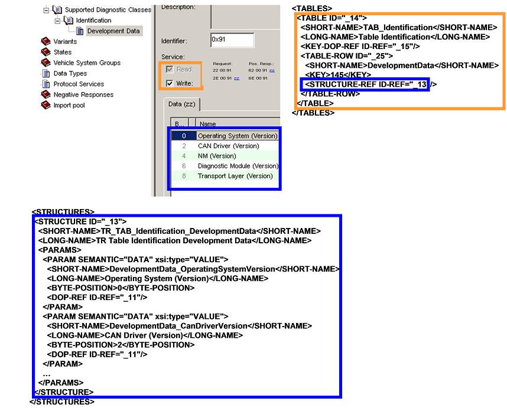
Export of a Single TABLE
An ECU-VARIANT-PATTERN contains a reference to the PARAM used for VariantIdentification and a reference to the DIAG-COMM which has to be executed in order to retrieve the value of the PARAM. Usually this is the SERVICE that is generated from the DiagInstance where the DataObject used for VI is defined. In case dynamic TABLEs are exported, there does not exist a specific DIAG-SERVICE for each DiagInstance, but only one Service for all DiagInstances. This cannot be used for VariantIdentification, as it is not clear which TABLE-ROW to use for the REQUEST. Therefore, a separate DIAG-SERVICE is exported for every DiagInstance that is used during VariantIdentification. This DIAG-SERVICE references then the appropriate TABLE-ROW directly.
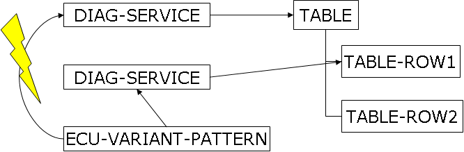
VariantIdentification for DIAG-SERVICEs using dynamic TABLEs
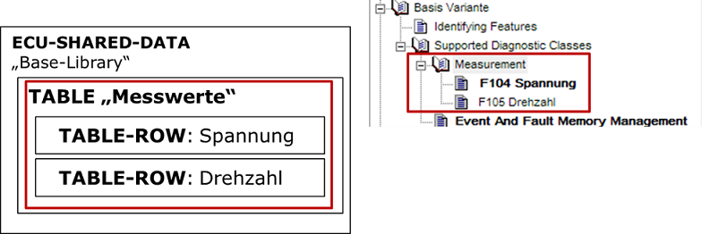
References to ECU-SHARED-DATA
In case a Diagnostic instance is created from a TABLE-ROW located in an ECU-SHARED-DATA, attributes store the location in the ECU-SHARED-DATA
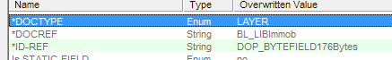
Attributes referencing the ECU-SHARED-DATA
In addition, the label of the diagnostic instance contains the ODX symbol.
On ODX-Export the TABLE-ROWs from these Diagnostic instances are not created but a TABLE-ROW-REF to the ECU-SHARED-DATA is created.